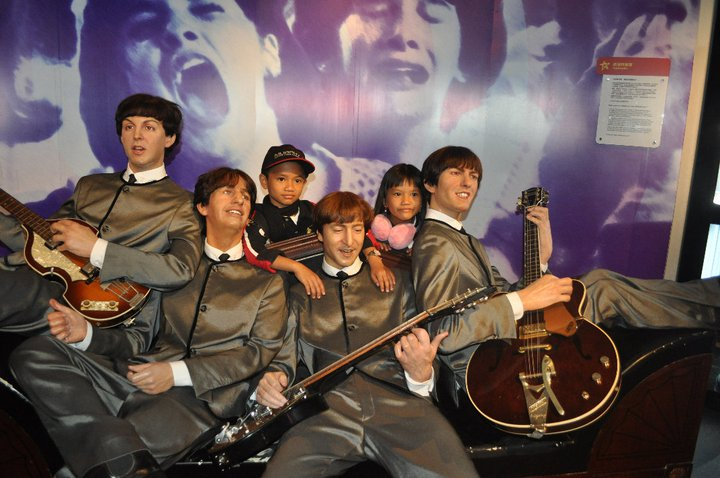

Introduction
Darwin a.k.a Raiden
Hi everyone! my name is Raja Darwin. I'm from Indonesia. I was born on June, 12th 2001. My favorite hobby is playing games. I love to play game so much. I can't do that anymore like before because of a lot of work in my college. It's really okay for me. I don't have many photos, But this is me with my sister, Ratu and the Beatles. If you wanna be my friend please click Register to be a friend here.
